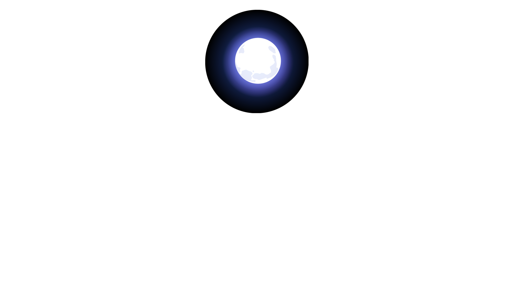
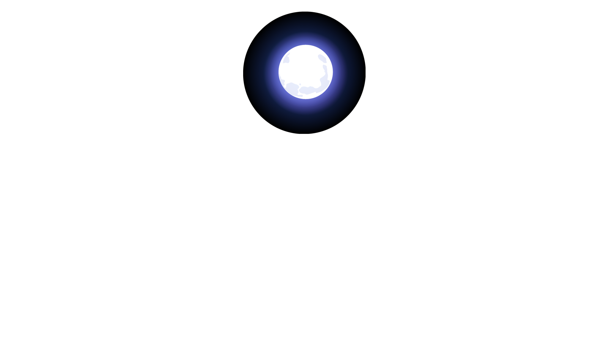
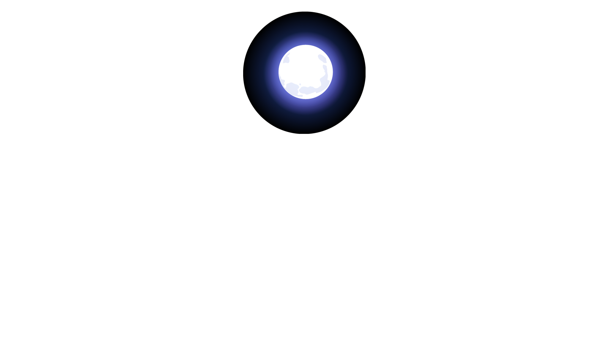
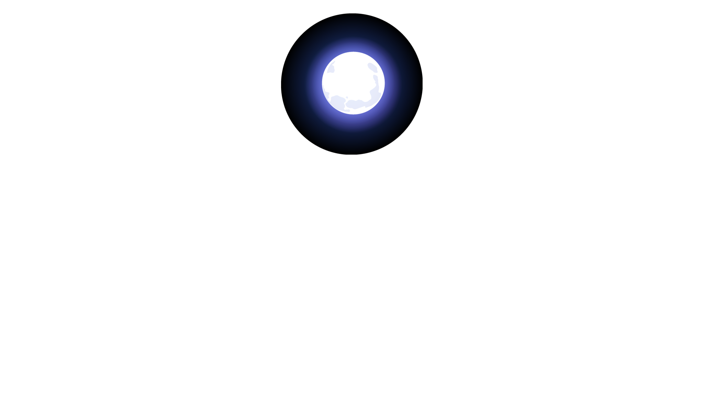

Moon Light
Explore 

Parallax scrolling is a technique in computer graphics where background images move past the camera more slowly than foreground images, creating an illusion of depth in a 2D scene of distance. The technique grew out of the multiplane camera technique used in traditional animation since the 1930s.
One of the first implementations of parallax scrolling in the browser was created and shared in a blog post by web developer Glutnix in 2007, this included example code and a demo using JavaScript and CSS 2 that supported Internet Explorer 6 and other browsers of that era.
Parallax scrolling is a computer graphics technique used by web designers to create a faux-3D effect. As users scroll down a webpage, different layers of content or backgrounds move at different speeds, and this creates an optical illusion. Using parallax scrolling is not a new technique. In the early 1980s, game designers working on Super Mario Bros. used parallax graphics to create a sensation of depth.
Designers can use the interactive capabilities of parallax scrolling to offer users an immersive web experience, one in which they can quite literally find all the information they need in one single page instead of browsing through several pages.